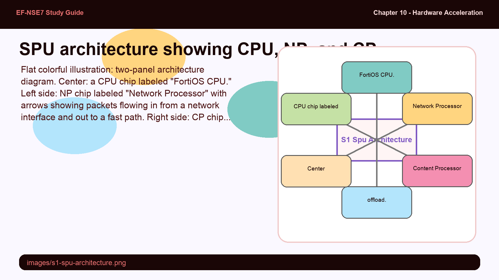
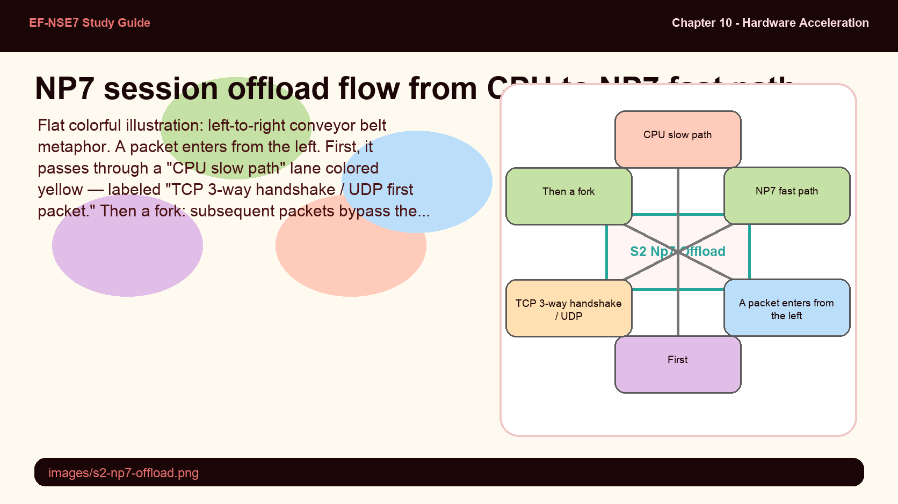
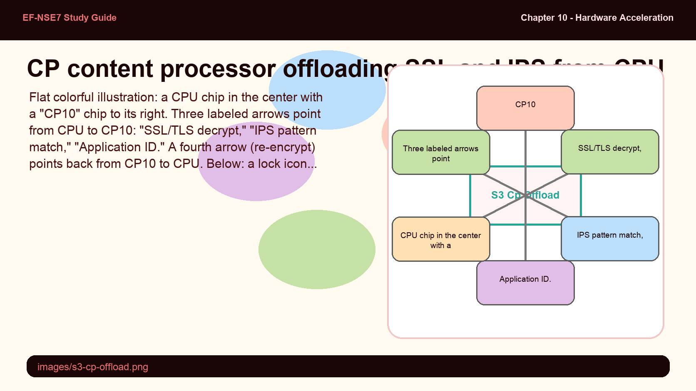
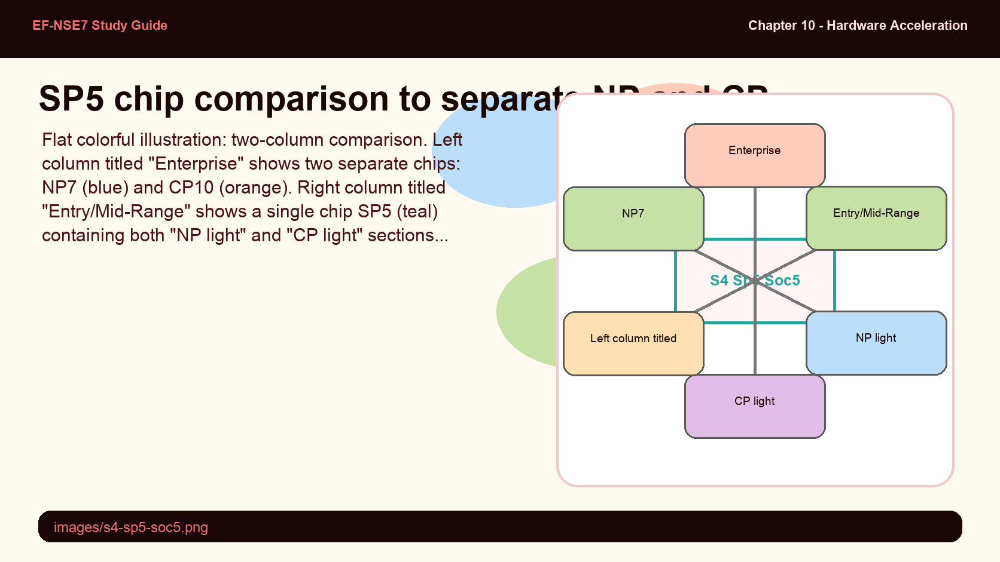
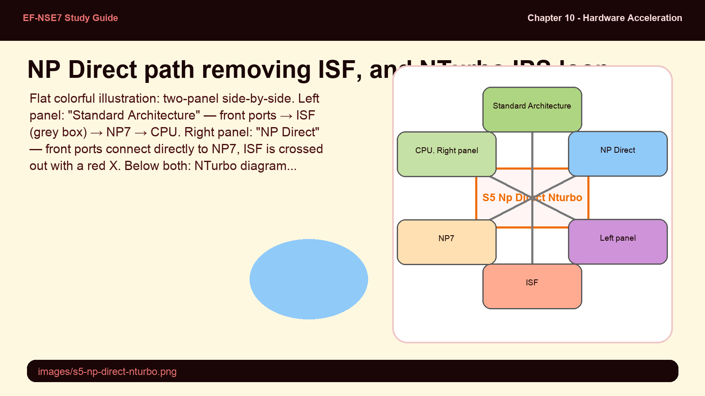
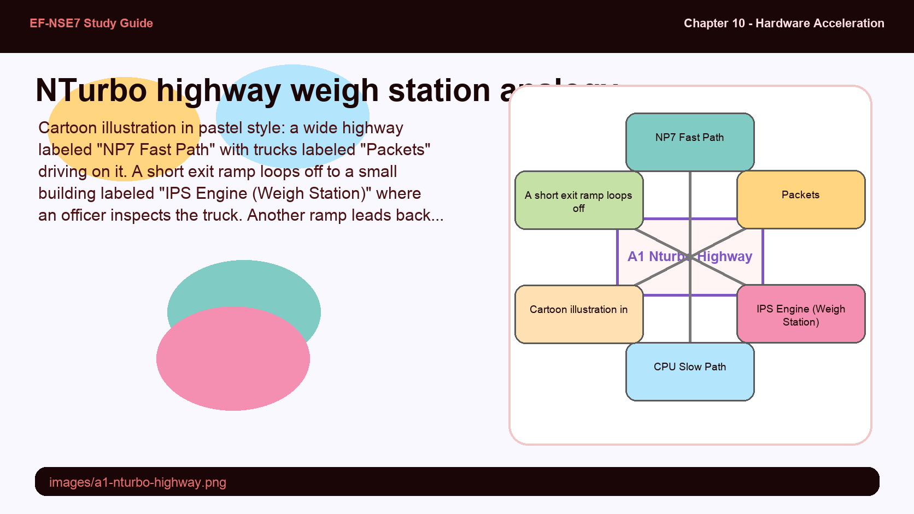

Master FortiGate's SPU architecture — NP7 network processors, CP10 content processors, the SP5 combo chip, NP Direct path, and how to identify each via CLI commands.
FortiGate's speed advantage lives in its dedicated silicon — knowing which processor handles what is the foundation of every offload decision.
The exam tests NP vs. CP distinctions, the session limit of NP7, and the commands used to identify SPU hardware.
💭THINK FIRST · SPU OVERVIEW
FortiGate performance specs list multiple throughput numbers — firewall throughput, IPS throughput, SSL inspection throughput — and they can differ by 10x. Before reading this section, think about why dedicated silicon for networking tasks would produce different results than software running on a general-purpose CPU.
What is the fundamental difference between a general-purpose CPU handling firewall logic versus a custom ASIC doing the same task, and why does it matter at line-rate traffic?
Why might FortiGate need two distinct types of specialized processors (one for networking, one for security content) rather than a single unified SPU?
Q1 — MODEL ANSWER
A general-purpose CPU must fetch, decode, and execute instructions for every packet — adding latency and consuming cycles that could serve other tasks. An ASIC implements the same logic in hardware gates that run at the speed of the chip clock with no instruction overhead, allowing millions of packets per second without CPU involvement. At line-rate, the difference between nanosecond hardware lookups and microsecond software decisions compounds across millions of concurrent sessions.
Q2 — MODEL ANSWER
Networking tasks (routing, NAT, forwarding at L2/L3) and security content tasks (deep-packet inspection, pattern matching, SSL decryption) have fundamentally different data access patterns and computational profiles. A single chip optimized for both would be a mediocre fit for each. By splitting them into NP (network processor) and CP (content processor), Fortinet can optimize the silicon architecture for each workload independently — NP for high-speed packet forwarding and CP for computationally expensive crypto and regex operations.
SECTION 01
Hardware Offload Architecture — the SPU

📷 images/s1-spu-architecture.png
FortiGate SPU block diagram: CPU at center, NP handling networking offload on one side, CP handling security content offload on the other.
Flat colorful illustration: two-panel architecture diagram. Center: a CPU chip labeled "FortiOS CPU." Left side: NP chip labeled "Network Processor" with arrows showing packets flowing in from a network interface and out to a fast path. Right side: CP chip labeled "Content Processor" with arrows showing IPS/SSL tasks offloaded. Both NP and CP connect to CPU with double-headed arrows labeled "offload." Pastel palette (blue for NP, orange for CP, grey for CPU), bold outlines, minimal text, no shadows, educational infographic feel.
Fortinet hardware acceleration technology uses specialized application-specific integrated circuits (ASICs) to offload resource-intensive security tasks from the main CPU. These chips, collectively called the Security Processing Unit (SPU), can be a Network Processor (NP), a Content Processor (CP), or both, depending on the FortiGate model.
By moving computationally expensive operations — encryption, pattern matching, packet forwarding — off the main CPU, FortiGate can handle far higher traffic volumes while maintaining security inspection. On virtual FortiGate devices, there is no SPU; the CPU handles all operations, which is why vFortiGate throughput numbers are much lower.
Exam tip: Virtual FortiGate (VM) has no SPU. Packet processing is CPU-only on all VM models — NP and CP offload simply do not apply. This is a frequent exam gotcha.
🧠
MENTAL NOTE
SPU = NP + CP (or both). NP offloads networking (L2/L3 forwarding, IPsec). CP offloads security content (SSL, IPS pattern matching). Virtual FortiGate has zero SPU — CPU handles everything.
ASK A QUESTION
ADD A NOTE
💭THINK FIRST · NP PROCESSOR
The NP7 can support up to 12 million sessions — but this limit is purely a memory constraint, not a CPU or bandwidth constraint. Once that ceiling is hit, the processor doesn't crash; it simply hands new sessions back to the CPU. Think about what architectural implications that has for a network design with many small, short-lived sessions.
NP7 can support 12 million sessions. What happens when this limit is reached, and how does the design prevent a hard failure?
The NP processor works at the "interface level." What does that mean in terms of the OSI model, and why is that significant for traffic types it can and cannot accelerate?
Q1 — MODEL ANSWER
Sessions over the 12-million limit are sent to the FortiGate CPU (slow path) instead of being rejected. The design degrades gracefully — extra sessions still work, just without hardware acceleration. You can prevent this by distributing sessions across multiple NP7 processors, which requires knowing which interfaces connect to which NP7 and designing traffic flows accordingly.
Q2 — MODEL ANSWER
Working "at the interface level" means the NP processor is directly attached to physical interfaces and can make forwarding decisions before packets even reach the kernel. It operates at L2/L3 — looking at MAC addresses, IP headers, and session tables. This is why it accelerates pure forwarding, NAT, and IPsec (which are L3 operations) but cannot accelerate proxy-based inspection, which requires application-layer data reassembly beyond its hardware scope.
SECTION 02
The Network Processor — NP6 and NP7

📷 images/s2-np7-offload.png
NP7 offload flow: first TCP packets go through CPU (slow path), subsequent packets bypass CPU via NP7 (fast path).
Flat colorful illustration: left-to-right conveyor belt metaphor. A packet enters from the left. First, it passes through a "CPU slow path" lane colored yellow — labeled "TCP 3-way handshake / UDP first packet." Then a fork: subsequent packets bypass the CPU and enter a green "NP7 fast path" lane at bottom, bypassing the CPU. Two lanes clearly labeled. At the end of the fast path, packet exits to the right interface. Bold outlines, pastel palette, no shadows, educational infographic style.
The Network Processor (NP) works at the interface level to accelerate network traffic by offloading it from the CPU. The current generation, the NP7, is found on high-end models like the FortiGate 900G and supports up to 12 million sessions — a limit constrained by processor memory, not throughput.
The NP processor always handles the first part of any session via the CPU: for TCP traffic this means the full three-way handshake; for UDP, the first packet. Only after the CPU establishes the session and confirms offload eligibility are subsequent packets delegated to the NP's fast path. FIN and RST packets always return to the CPU for session teardown.
Offloads IPsec VPN encryption and decryption (supported algorithms only)
Performs IP integrity header checking early in the packet lifecycle
Handles Source NAT for offloaded sessions
Exam tip: Sessions that use proxy-based security profiles, FortiOS session helpers, or SSL/GRE tunneling (except IPsec) are never offloaded to the NP. A firewall policy mixing flow-based and proxy-based profiles also blocks NP offload entirely.
To identify the NP model, use the diagnose hardware lspci command and look for Fortinet's vendor ID 1a29. The hexadecimal value after it tells you the model: 4e36 = NP6, 4e37 = NP7.
FortiGate CLI — Identify NP Model
# diagnose hardware lspci | grep 1a29
9b:00.0 Class 1000: Device 1a29:4e37NPID
# If NPID is 4e36, it is NP6
# If NPID is 4e37, it is NP7
🧠
MENTAL NOTE
NP7 = 12 million session limit (memory-bound). CPU always handles session setup (TCP handshake / first UDP packet). Sessions over limit go to CPU — no hard failure. Identify with lspci: 4e37 = NP7, 4e36 = NP6.
ASK A QUESTION
ADD A NOTE
💭THINK FIRST · CP PROCESSOR
SSL deep inspection requires decrypting every HTTPS session, scanning it, and re-encrypting it — a workload that can reduce overall FortiGate throughput by 70-80% if done in software. The CP is designed specifically for this. But notice: the CPU still decides which tasks go to the CP. This means the CP is a "coprocessor," not an independent engine.
The CP offloads SSL/TLS decryption for deep inspection. Why is this specifically a content processor task rather than a network processor task?
If the CPU must decide what to send to the CP, what scenarios might cause the CP to be underutilized even on a high-traffic FortiGate?
Q1 — MODEL ANSWER
SSL/TLS decryption requires understanding the application protocol — certificates, session keys, cipher negotiation — which is above L3 and outside the NP's scope. The CP is designed for cryptographic and pattern-matching operations that require application-layer awareness. It functions as a coprocessor to the CPU for security functions, while the NP handles pure packet forwarding at the network layer.
Q2 — MODEL ANSWER
If the CPU itself becomes a bottleneck deciding what to offload, it may not send work to the CP fast enough — making the CP sit idle. Also, if security profiles use proxy-based mode instead of flow-based mode, or if the traffic uses cipher suites not supported by the CP hardware, the offload won't happen. The CP accelerates only the tasks for which it has hardware support and which the CPU explicitly delegates.
SECTION 03
The Content Processor — CP9 and CP10

📷 images/s3-cp-offload.png
CP processor as CPU coprocessor: CPU delegates SSL decrypt/encrypt and IPS pattern matching to CP hardware.
Flat colorful illustration: a CPU chip in the center with a "CP10" chip to its right. Three labeled arrows point from CPU to CP10: "SSL/TLS decrypt," "IPS pattern match," "Application ID." A fourth arrow (re-encrypt) points back from CP10 to CPU. Below: a lock icon represents SSL inspection. Pastel palette (orange for CP10, grey for CPU), bold outlines, minimal text, no shadows, educational infographic.
The Content Processor (CP) functions as a coprocessor to the FortiGate CPU, accelerating common resource-intensive security operations. The latest model, the CP10, is found on devices like the FortiGate 200G. The CPU determines which security tasks are candidates for CP acceleration and delegates them accordingly.
CP acceleration targets include:
Application identification for flow-based security profiles
IPS pattern matching (via IPSA — IPS Acceleration) in flow-based mode
Antivirus scanning in flow-based mode
SSL/TLS decryption and encryption for SSL deep inspection
IPsec Diffie-Hellman key exchange acceleration for ESP traffic
To identify the CP model, use get hardware status and look at the ASIC version field. A value of CP9 means CP9, CP10 means CP10.
FortiGate CLI — Identify CP Model
# get hardware status
Model name: FortiGate-900G
ASIC version: CP9
...
# To disable CP Diffie-Hellman offload globally (troubleshooting):
config system global
set ipsec-asic-offload disable
end
Note: CP processors accelerate SSL deep inspection — which is why FortiGate's SSL inspection throughput spec is much higher on hardware models than virtual appliances. On a FortiGate 900G with CP9, decryption is hardware-offloaded rather than CPU-bound.
🧠
MENTAL NOTE
CP = coprocessor for CPU. Handles: SSL decrypt/encrypt, IPS pattern matching, app-ID, AV (flow-based). Latest = CP10 (FG-200G). Identify via "get hardware status" → ASIC version. Disable DH offload globally with ipsec-asic-offload disable.
ASK A QUESTION
ADD A NOTE
💭THINK FIRST · SP / SoC CHIPS
Entry-level FortiGate models serve branch offices and SMBs but must still offer hardware acceleration at lower cost. The SP5 and SoC5 solve this by putting reduced-capability NP and CP functions on a single chip — trading maximum throughput for a smaller, cheaper, lower-power design.
Why does placing NP and CP on a single chip (SP5/SoC5) result in lower throughput compared to having separate NP7 and CP10 chips?
How would you confirm whether a FortiGate-91G uses an SP5 chip rather than separate NP and CP processors?
Q1 — MODEL ANSWER
A single chip must share die area, memory buses, and thermal headroom between NP and CP functions. Dedicated chips have the full silicon real estate and memory bandwidth optimized for their single function. The SP5 implements "light versions" of both — enough to accelerate common operations at branch-office scale but without the parallelism and capacity of enterprise-class discrete chips.
Q2 — MODEL ANSWER
Run "get hardware status" and check the ASIC version field. An SP5 chip reports "SOC5" as its ASIC version, while discrete CP processors report "CP9" or "CP10." This is the definitive way to distinguish SP-based entry-level devices from mid/high-range devices with separate NP and CP chips.
SECTION 04
SP5 and SoC5 — Combo Chips for Entry-Level Devices

📷 images/s4-sp5-soc5.png
SP5 vs. separate NP7+CP10: same functions on a single lower-cost chip for entry/mid-range devices.
Flat colorful illustration: two-column comparison. Left column titled "Enterprise" shows two separate chips: NP7 (blue) and CP10 (orange). Right column titled "Entry/Mid-Range" shows a single chip SP5 (teal) containing both "NP light" and "CP light" sections divided by a dashed line. Arrow from each column points to a sample FortiGate model name. Pastel palette, bold outlines, no shadows, educational infographic.
For entry-level and mid-range FortiGate devices, Fortinet uses a combined chip called the SP (Security Processor), with the latest version being the SP5 (also known as NP7lite on some platforms). The SP5 includes light versions of both NP and CP components on a single integrated circuit, offering hardware acceleration at a lower cost and power envelope than dedicated separate chips.
SPU Type
Latest Version
Example Device
Key Role
NP
NP7
FortiGate 900G
Interface-level network offload, IPsec, up to 12M sessions
The SP5 reports as SOC5 in the get hardware status ASIC version field. The diagnose npu np7lite dvlan-mode-list command can be used on SP5 devices (named np7lite in diagnostics), confirming the combined-chip identity.
🧠
MENTAL NOTE
SP5 = NP + CP on one chip, lower throughput, entry/mid-range models. get hardware status → ASIC version: CP9/CP10 = discrete CP, SOC5 = SP5 combo. SP5 is also called NP7lite in diagnostic commands.
ASK A QUESTION
ADD A NOTE
💭THINK FIRST · NP DIRECT & NTURBO
NP Direct architecture removes the internal switch fabric (ISF) from the data path — the packets go straight from the physical port to the NP. NTurbo solves a different problem: what happens when flow-based security profiles are present? Normally the NP can't handle IPS inspection, so NTurbo creates a special data path that loops packets through the IPS engine and back to the NP.
NP Direct eliminates the ISF. What is the ISF and why does removing it reduce latency?
NTurbo is needed when flow-based security profiles are configured. Why can't the NP handle IPS inspection directly, and what role does the NTurbo driver play?
Q1 — MODEL ANSWER
The ISF (Internal Switch Fabric) is a hardware chip switch that connects FortiGate's physical front-panel ports to the NP processors. In standard architecture, every packet passes through the ISF before reaching the NP, adding a hardware hop and associated latency. NP Direct bypasses this fabric, connecting physical ports directly to the NP — reducing forwarding latency to near-wire speed for offloaded sessions.
Q2 — MODEL ANSWER
The NP handles L2/L3 forwarding but has no capability to run IPS signature matching or application inspection — that requires the IPS engine running on a CPU. NTurbo bridges this gap: it runs on a dedicated CPU that intercepts packets from the NP, sends them to the IPS engine for signature checking, then returns the processed packets to the NP for continued fast-path forwarding. This improves IPS throughput by keeping NP in the path after inspection rather than handing everything to the slow path.
SECTION 05
NP Direct Architecture and NTurbo

📷 images/s5-np-direct-nturbo.png
NP Direct: ports connect directly to NP (no ISF). NTurbo: packets loop to IPS engine then back to NP for fast-path forwarding.
Flat colorful illustration: two-panel side-by-side. Left panel: "Standard Architecture" — front ports → ISF (grey box) → NP7 → CPU. Right panel: "NP Direct" — front ports connect directly to NP7, ISF is crossed out with a red X. Below both: NTurbo diagram showing NP7 sending packets to IPS engine (CPU-based) via NTurbo driver then returning to NP7. Blue for NP7, yellow for ISF, green for IPS engine. Pastel palette, bold outlines, educational infographic style.
NP Direct architecture is available on FortiGate devices with two or more NP6 processors (e.g. FG-200E, FG-2000E), or on NP7-based devices where ports X5–X8 connect directly to the NP7 processor (e.g. FG-400F, FG-600F, FG-900G). It eliminates the Internal Switch Fabric (ISF) — the hardware switch connecting ports to NPs — so traffic flows from physical interface directly into the NP, reducing forwarding latency.
A critical constraint: all traffic for an offloaded session must enter and exit through interfaces connected to the same NP6/NP7 processor. If the ingress and egress ports are on different NP processors, NP Direct offload cannot occur.
NTurbo extends NP offload to sessions where flow-based security profiles are configured. Normal NP offloading cannot work with security profiles — the IPS engine must inspect the traffic. NTurbo solves this by:
Running a dedicated NTurbo driver on a CPU assigned to this traffic
Sending packets from the NP to the IPS engine via the NTurbo driver
IPS engine processes the required security action
NTurbo driver sends processed packets back to the NP for fast-path forwarding
NTurbo is enabled by default. For proxy-based inspections, the CPU handles everything — NTurbo applies only to flow-based UTM/NGFW sessions.
Analogy
NTurbo is like a highway with a mandatory weigh station loop — trucks (packets) stay on the fast highway but must briefly exit to be inspected before re-entering.
NP7 fast path (highway) — high-speed packet forwarding that bypasses the city streets (CPU)
IPS engine (weigh station) — mandatory inspection point that every truck must pass through
NTurbo driver (on-ramp/off-ramp) — routes trucks from the highway to the weigh station and back, keeping them off the city streets

📷 images/a1-nturbo-highway.png — add this image to the folder
Cartoon illustration in pastel style: a wide highway labeled "NP7 Fast Path" with trucks labeled "Packets" driving on it. A short exit ramp loops off to a small building labeled "IPS Engine (Weigh Station)" where an officer inspects the truck. Another ramp leads back to the highway. City streets in the background labeled "CPU Slow Path" — much fewer vehicles, congested. NTurbo driver shown as a green on-ramp/off-ramp sign. Bold outlines, pastel palette (blue highway, yellow building, green ramps), no shadows, educational infographic style.
🧠
MENTAL NOTE
NP Direct = remove ISF for lowest latency; ingress/egress must be on the same NP. NTurbo = NP + flow-based IPS coexist; packets loop CPU→IPS→NP. Proxy-based = CPU only, NTurbo does not apply. NTurbo is enabled by default.